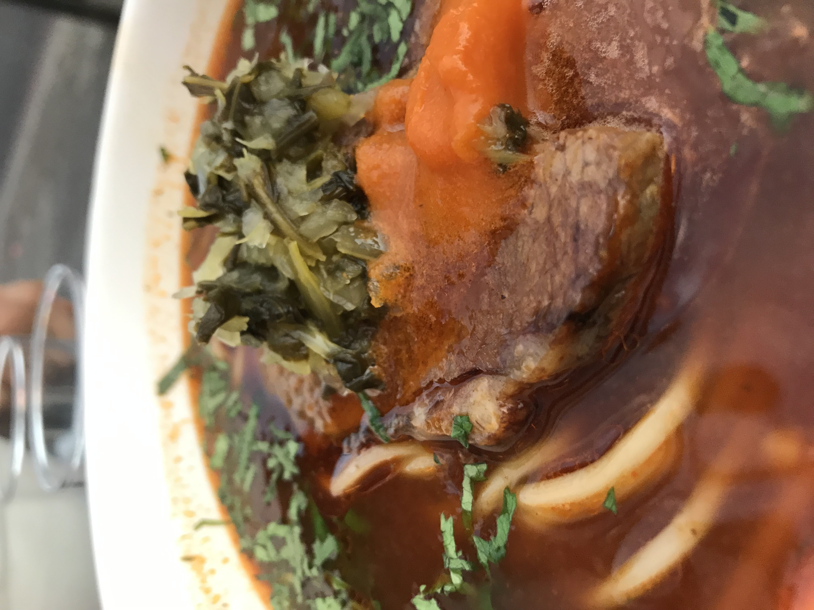
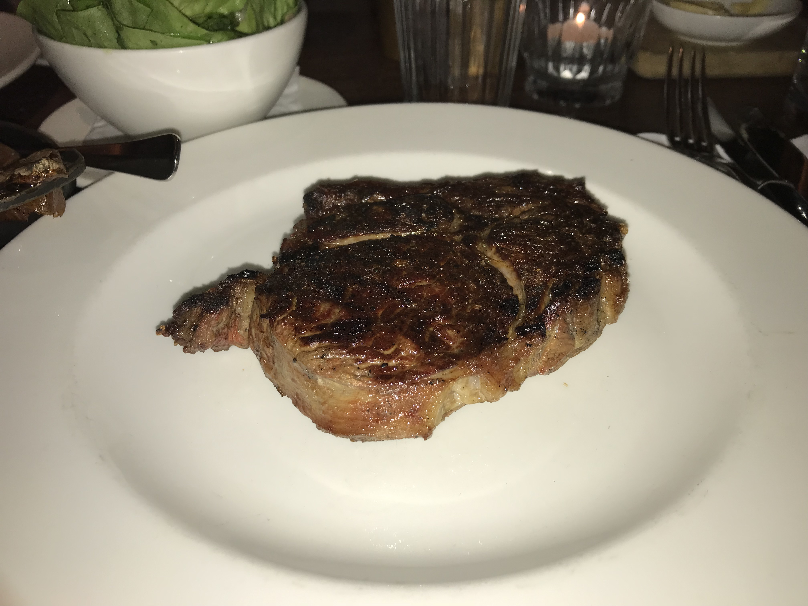

1 / 3

Caption Text
2 / 3

Caption Two
3 / 3

Caption Three
Always a fan of trying different types of food. My go to is pasta primavera but I enjoy south east asian and ofcourse carribean food from where part of my heritage is from.